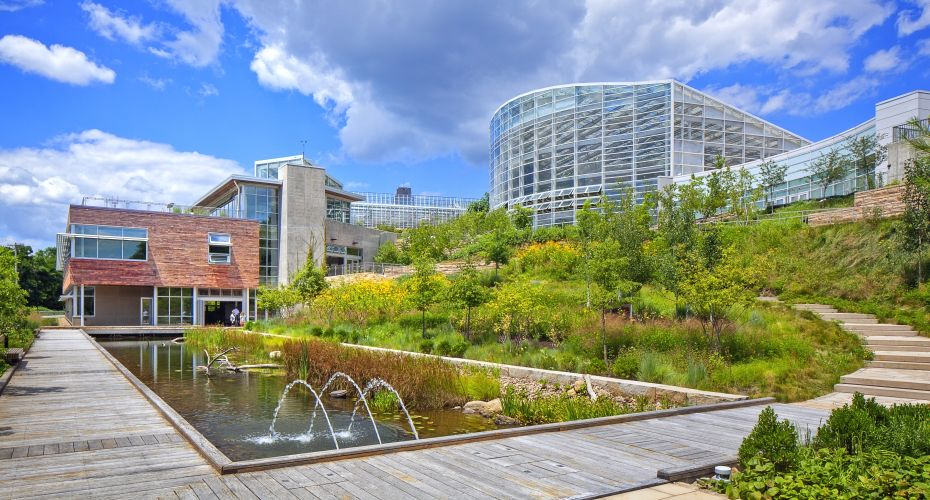

Welcome to the Phipps Conservatory!
Did you know that Phipps Conservatory's Center for Sustainable Landscapes is one of the 'greenest' in the world? Read all about it here!
Center for Sustainable Landscapes: Now a Certified Living Building
The future of green has arrived! One of Earth's greenest buildings is now open for you to visit. Learn how you can take a free docent-led tour and see the facility for yourself.